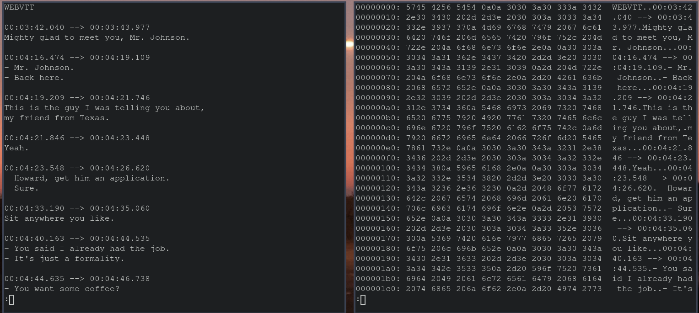
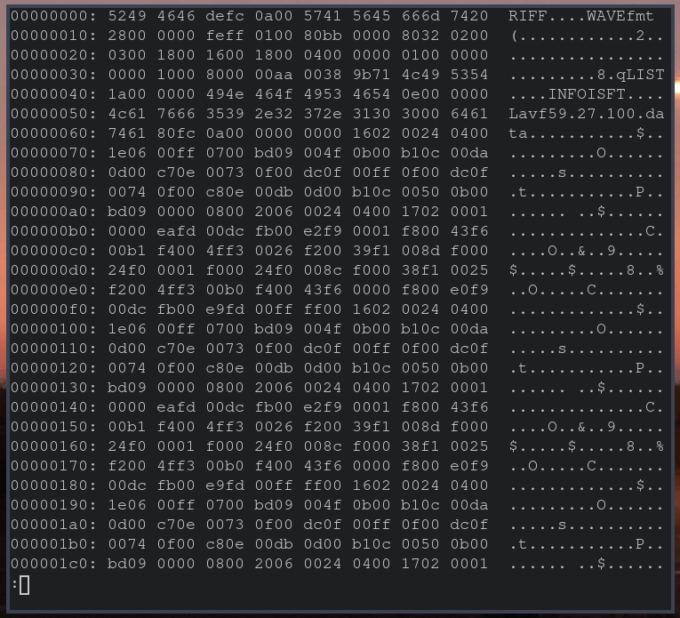
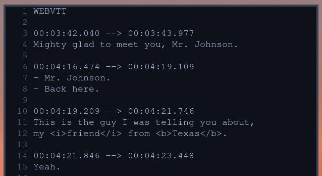
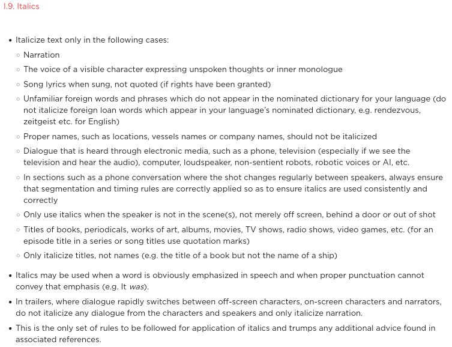

Web Display of Timed Text
AMIA | 2022-09-15
with Brendan Coates (he|his)
Overview
What we are gonna learn about
Uniqueness of text files
Link btw preservation and access
for these "related" files
Subtitle Files:
They're Just Text!

They're Just Text!
media files have other stuff going on

They Can/ Do Contain Markup tho
which then has to be parsed and rendered (/decoded)
timecodes could be considered a kind of markup imo

Types of Markup
CSS class
italics
bold
underline
Ruby
Ruby text
Voice(like CSS)
CSS class in detail
every CSS method is available
incl. position, color, font-family
div background, text-shadow
Subtitle Style Guide
make one, share it

Display Strategy
Embedded Text
Separate Text
User Preferences
Display Settings
zoom
fonts
other shit
Default vs. Preferred
browser cache -> previous language selection
~different than "default" language on page/vid
thank you!